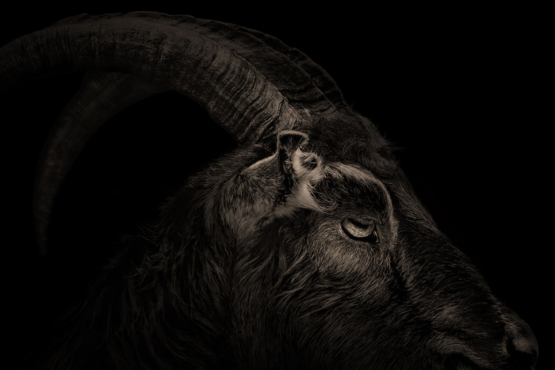

Por qué vamos a vivir años dorados en el cine de terror
Autor: Emilio de Gorgot
Fecha de publicacion: 2018-11-09

El terror siempre ha sido el género cinematográfico más rentable. Si consideramos el balance entre los costes de una película y sus posibles beneficios (y excluyendo, claro, la pornografía como género cinematográfico), la ecuación está clara: Miedo = $.
El público del terror es poco exigente. Existen los sibaritas del género, claro, pero son una minoría. En términos comerciales el terror cinematográfico no necesita calidad para triunfar. En los últimos veinte años hemos sido testigos del encumbramiento comercial del terror más facilón imaginable. En 1999, El proyecto de la bruja de Blair recaudó unos doscientos cincuenta millones de dólares con un presupuesto de sesenta mil, mucho menos de lo que cuesta un único episodio de una serie de televisión normalita. En 2007, Paranormal Activity, cuyo rodaje costó lo mismo que un utilitario, recaudó doscientos millones, convirtiéndose en la película más rentable de toda la historia del cine.
Estaremos de acuerdo en que ninguna de las dos es El resplandor, pero demostraron hasta qué punto es fácil ganar dinero dando sustos sin pensar demasiado en el guion. El subgénero del found footage, el «metraje encontrado», ni siquiera requiere calidad de imagen, que en tiempos era el mínimo exigible a una película. Títulos con secuencias «anticinematográficas» que antes no hubiesen sido proyectadas ni en festivales domingueros para aficionados disponen ahora de buena distribución en las cadenas de cines (aunque cabe admitir que se han hecho cosas interesantes en ese formato, como la española REC o la primera entrega de Cloverfield). Las seis atroces películas de la saga Paranormal Activity han costado poco más de treinta millones de dólares entre todas y han recaudado casi mil millones. Eso es un beneficio mayor que un éxito de Marvel o de Star Wars.
Con estos y otros precedentes, no parece haber motivo lógico para que alguien se esfuerce en producir terror de calidad. Y, sin embargo, en los últimos años se está haciendo. El terror ha dejado de ser un género contemplado con desdén por los críticos y se ha convertido en una constante fuente de sorpresas.
El momento en que quedó sellado este renacimiento fue la nominación como candidata a mejor película de Déjame salir, la pesadilla racial escrita y dirigida por Jordan Peele, en los Óscar de 2018. No ganó, pero dio mucho que hablar porque es rarísimo que un largometraje de terror sea nominado en esa categoría; solo ha sucedido seis veces a lo largo de la historia y para llegar a ese número hay que incluir títulos que quizá encajarían mejor dentro del thriller psicológico. Las otras cinco nominadas fueron El exorcista (1974), Tiburón (1976), El silencio de los corderos (1991), El sexto sentido (2000) y El cisne negro (2011). Un par de ellas, como ven, las estamos incluyendo en el género con calzador.
La nominación de Déjame salir supuso el reconocimiento académico de lo que todos ya sabíamos: que el terror lleva varios años generando pequeñas joyas hechas casi siempre con presupuestos modestos. El cómo y el porqué de esto que algunos llaman la «nueva edad dorada del terror» parecen ir en contra de lo que pensamos acerca de la manera en que funciona la industria del cine: «Si las películas de terror tienen mucho público aunque sean malas, y si a veces tienen mucho público especialmente cuando son malas, ¿para qué esforzarse en hacer películas de terror buenas?». Bien; como muchas otras cosas, esto es el resultado de un proceso histórico y de que algunos productores han aprendido de las cosas que sucedieron en el pasado.